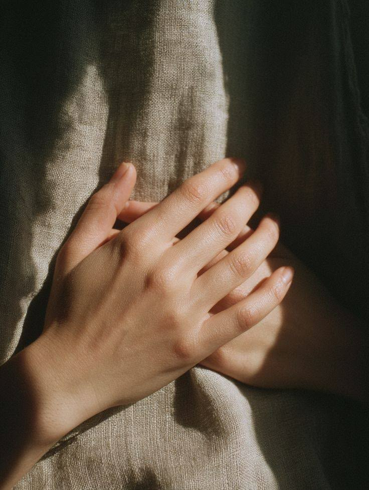

쉬어가고, 발견하고, 나아간다.한 번의 호흡에서 시작되는 쉼
THE ART OF A LITTLE PAUSE
쉼에도,
나만의 속도가 있으니까.
RE:ST는 숨가쁜 일상 속,
나에게 필요한 쉼을 발견하는 공간입니다.
잘 쉬어야 한다는 부담도 내려놓고,
지금의 나에게 작은 틈을 내어주세요.
쉬어가고, 발견하고, 나아간다.
Nothing to do. Just be.
01
Relax 3 MIN
호흡으로 긴장을 내려놓고
지금 쉬어갈 수 있어요02
Refresh 6 MIN
ASMR로 감각을 환기하며
준비 중03
Return 9 MIN
명상으로 차분히 일상에 나아갑니다
준비 중RE:ST Care 지금, 당신에게 필요한 휴식을 제안하고 쉼을 도와드립니다.
현재는 Relax의 3분 호흡 코스를 제공합니다.
YOUR OWN WAY TO REST
나에게 맞는 쉼을
시작하세요.
RELAX · 3 MINUTES FOR YOURSELF
잠시, 호흡의 시간
지금의 마음에 닿는 호흡을 골라보세요.
잘하려고 애쓰지 않아도 괜찮아요.
A softer breath.
A quieter mind.
A LITTLE CARE, JUST FOR YOU
지금, 당신의
마음은 어떤가요?
조금만 알려주세요.
당신에게 어울리는 쉼을 제안할게요.

Every feeling is welcome here.RE:ST Care는 준비된 세 가지 호흡 중 하나를
AI로 추천해요. 입력은 추천을 위해 OpenAI로 전송됩니다.
RE:ST Care나를 위한 작은 제안
A MOMENT CHOSEN FOR YOU
지금 당신에게 어울리는 쉼
RELAX · 3 MIN
← 호흡 다시 고르기
RELAX · A MOMENT TO REST
기본 집중 호흡
편안한 자세로, 나의 호흡에 귀 기울여보세요.
나만의 속도로
준비되면 시작해요
나에게 머무는 시간00:00 / 03:00
호흡은 편안한 만큼만 따라오세요.
불편하거나 어지러우면 중단하고 자연스럽게 호흡하세요.